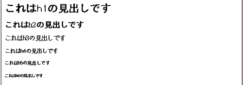
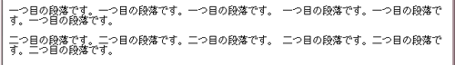
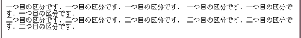
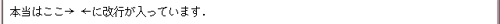
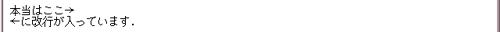
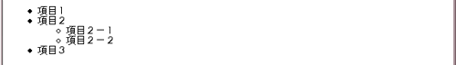
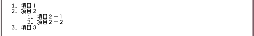
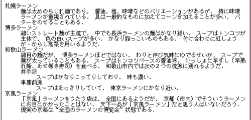
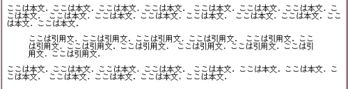
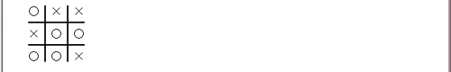

HTML 文書は，ヘッダ部と本文（ボディ）の２つの部分からなります． 最初の１行は DOCTYPE Declaration といい， 使用している HTML のバージョンを示しています． ここでは HTML 4.01 を指定しています． なお，これは HTML のタグではなく，HTML のベースとなっている SGML（Standard Generalized Markup Language ～ コンピュータによる文書交換のための標準規格）のものです．
<!DOCTYPE HTML PUBLIC "-//W3C//DTD HTML 4.01 Transitional//EN">
<html>
<head>
<title>タイトル</title>
： （ヘッダ部）
</head>
<body>
： （ボディ部）
</body>
</html>
<html>，
</html>，
<head>，
</head>，
<body>，
</body>
は省略できますが，
<title> ～
</title> は省略できません．
この文書はHTML 4.01 の（非常に片寄った）抜粋です．現在 W3C (World Wide Web Consortium) は HTML 4.01 を XML で定義し直した XHTML 1.0 を推奨しています．また，この文書では CSS (Cascading Style Sheets) には触れていません．
HTML 4.01 の仕様書の邦訳は HTML 4 仕様書邦訳計画にあります．XHTML 1.0 の仕様書の邦訳は XHTML 1.0: 拡張可能ハイパーテキストマークアップ言語にあります．
Web ページのタイトルは，<title> ～
</title> でマークアップしてヘッダ部に置きます．
<head> <title>ここにタイトルを書きます</title> </head>
このタイトルは本文ではなく，Web ブラウザのウィンドウの枠などに現れます．日本語は，Web ブラウザ（あるいはコンピュータ）の種類によっては正常に表示できないことがあります． タイトルは必ず付けなければなりません．
見出しは <h(数字)> ～
</h(数字)> でマークアップします． (数字) は１～６で，１が一番“重要度”の高い見出しになります．
ブラウザは通常この重要度を文字の大きさとして表現します． また見出しが目立つように字体を太字にし，前後の行間をあけます．
<h1>これはh1の見出しです</h1> <h2>これはh2の見出しです</h2> <h3>これはh3の見出しです</h3> <h4>これはh4の見出しです</h4> <h5>これはh5の見出しです</h5> <h6>これはh6の見出しです</h6>
これは，こんな具合いになります．

段落を設ける場合には，文章を <p> ～
</p> でマークアップします．
<p>一つ目の段落です．一つ目の段落です．一つ目の段落です． 一つ目の段落です．一つ目の段落です．一つ目の段落です．</p> <p>二つ目の段落です．二つ目の段落です．二つ目の段落です． 二つ目の段落です．二つ目の段落です．二つ目の段落です．</p>
段落は次のように，改行した上で行間をあけて表示されます．

一連の要素（文章など）をひとつのまとまり（ブロック）として区分するには，文章を
<div> ～
</div> でマークアップします．これはレイアウトコンテナと呼ばれます．
<div>一つ目の区分です．一つ目の区分です．一つ目の区分です． 一つ目の区分です．一つ目の区分です．一つ目の区分です．</div> <div>二つ目の区分です．二つ目の区分です．二つ目の区分です． 二つ目の区分です．二つ目の区分です．二つ目の区分です．</div>
区分は次のように，改行して表示されます．行間は開きません．

HTML ではテキスト中の改行や空白は無視されてしまいます．本文に
本当はここ→ ←に改行が入っています．
と書いても，Web ブラウザ上では

と表示されてしまいます．積極的に改行するには文章を段落や
区分に分けるか，
<br> を入れます．
本当はここ→<br> ←に改行が入っています．
とすれば，

となります．
箇条書きを行う部分は <ul> ～
</ul> でマークアップし，各項目を <li> ～
</li> でマークアップします．
<ul> ～
</ul> の中に
<ul> ～
</ul>
を置いて，リストを入れ子構造にすることもできます．HTML
の記述のインデント（字下げ，行頭の空白）は HTML
ソースを見やすくするためのもので，Web ページ上のレイアウトには影響を与えません．
<ul>
<li>項目１</li>
<li>項目２</li>
<ul>
<li>項目２－１</li>
<li>項目２－２</li>
</ul>
<li>項目３</li>
</ul>
これは，次のように表示されます．

各項目に番号をつけたリストも作成するには，その部分を
<ol> ～
</ol> でマークアップし， 各項目を <li> ～
</li> でマークアップします．これもリストを入れ子構造にできます．
<ol>
<li>項目１</li>
<li>項目２</li>
<ul>
<li>項目２－１</li>
<li>項目２－２</li>
</ul>
<li>項目３</li>
</ol>
これは，次のように表示されます．

単語リストのように，あるキーワードに対して説明を加える時などに使えるリストです．
これはリスト表記する部分を <dl> ～
</dl> でマークアップし，各項目のキーワード部分を <dt> ～
</dt> で，記述部分を <dd> ～
</dd> でマークアップします．これもリストを入れ子構造にできます．
<dl>
<dt>札幌ラーメン</dt>
<dd>麺は太めのちじれ麺であり，
醤油，塩，味噌などのバリエーションがあるが，
特に味噌ラーメンが重視されている．
具は一般的なものに加えてコーンを加えることが多い．
バターをのせることもある．</dd>
<dt>博多ラーメン</dt>
<dd>細いストレート麺が主流で，
中でも長浜ラーメンの麺はかなり細い．
スープはトンコツが主体で，
色の白いスープが多い．
かなり脂っこいものもある．
付け合わせに紅しょうが・からし高菜を用いるようだ．</dd>
<dt>和歌山ラーメン</dt>
<dd>細目の麺だが，
博多ラーメンほどではない．
わりと伸び気味にゆでるせいか，
スープで麺が太っていることもある．
スープはトンコツベースの醤油味．
いっしょに早すし（早熟れ鮨，あせ巻き寿司）を食べる．
和歌山市内では次の２つの流派に別れるようだ．</dd>
<dl>
<dt>井手派</dt>
<dd>スープはかなりこってりしており，
味も濃い．</dd>
<dt>車庫前派</dt>
<dd>スープはあっさりしていて，
東京ラーメンにかなり近い．</dd>
</dl>
<dt>京風ラーメン</dt>
<dd>「京風」ラーメンをうたう店は，
全国にあるようだが，
京都（市内）でそういうラーメンにお目にかかったことはない．
天下一品が「京風ラーメン」だと思う人はいないだろう．
現実の京都は“全国のラーメンの博覧会”状態である．</dd>
</dl>
これは，次のように表示されます．

引用部分は <blockquote> ～
</blockquote> でマークアップします．この部分の行の長さは本文より短くなります．
<p> ここは本文．ここは本文．ここは本文．ここは本文． ここは本文．ここは本文．ここは本文．ここは本文． ここは本文．ここは本文．ここは本文．ここは本文． ここは本文．ここは本文．ここは本文．ここは本文． </p> <blockquote> ここは引用文．ここは引用文．ここは引用文．ここは引用文． ここは引用文．ここは引用文．ここは引用文．ここは引用文． ここは引用文．ここは引用文．ここは引用文．ここは引用文． </blockquote> <p> ここは本文．ここは本文．ここは本文．ここは本文． ここは本文．ここは本文．ここは本文．ここは本文． ここは本文．ここは本文．ここは本文．ここは本文． </p>
これは次のように表示されます．

HTML 中では改行や空白は無視されてしまいますが，それだと不便なことがあります．
改行や空白によるレイアウトを活かして表示するためには，その部分を
<pre> ～
</pre> でマークアップします．
<pre>
○┃×┃×
━╋━╋━
×┃○┃○
━╋━╋━
○┃○┃×
</pre>
これは次のように表示されます．

現在表示しているページに，他のページを参照するための「ホットスポット」
（マウスでクリックすると何かが起こる場所）を埋め込むことを，そのページに
リンクする とか リンクを張る などと言います．これは「ホットスポット」として使いたい文字列を， <a href="リンク先のURL"> ～
</a> でマークアップします．和歌山大学のホームページにリンクするには，次のように書きます．
<a href="http://www.wakayama-u.ac.jp/">和歌山大学</a>
リンク先がリンク元と同じ場所にあれば，URL の一部を省略することができます．例えば，
http://www.somewhere.ac.jp/X/a.html
というページから，そのページと同じディレクトリにある
http://www.somewhere.ac.jp/X/b.html
にリンクを張る場合， http://www.somewhere.ac.jp/X/ を省略して，
<a href="b.html">b.html にリンク</a>
と書くことができます．また a.html から，同じサーバの別のディレクトリにある
http://www.somewhere.ac.jp/Y/c.html
にリンクするには，
<a href="/Y/c.html">c.html にリンク</a>
と書くことができます．
公開されているホームページは多くの人に見てもらうために作っているのですから， 個人的にそういうページにリンクを張ることは，原則的に自由だと考えられています （著作権情報センターのＱ＆Ａ）．
しかし，中にはリンクを禁止していたり， 事前にメールなどで了解を求めているところもあったりして，これに関しては一般的な合意が得られているわけではありません（千葉学芸高等学校高橋邦夫先生の「WWWのリンクについて」）．
他人のホームページにリンクを張るときは， そのページだけではなく， そのページの所有者の他のページも良く読んで， リンクの可否に関する記述がないかどうか十分に確かめましょう． また，そういう記述がなくても， リンクを張る場合には事前の問い合わせがあって当然と考えている人もいるので， できるだけメール等でそのページの所有者に確認を取った方がいいでしょう．
ただ，そういうメールにいちいち返事を書くのが面倒という人もいるので，
「××様のホームページ http://www.yourhost.xx.jp/yourpage.html に， http://www.sys.wakayama-u.ac.jp/~USER/mypage.html から リンクを張らせて頂きました．もしご都合が悪いようでしたら， USER@sys.wakayama-u.ac.jp までお知らせ下さい．」というような内容のメールを送ることを勧めます…が， これも一概には言えないので世の中ややこしい…
Web ページに画像を埋め込むには，
<img src="画像ファイルのURL"
alt="その画像ファイルの説明"> を書きます．
http://www.wakayama-u.ac.jp/~tokoi/lecture/shori1/bomb.gif
という画像ファイルを埋め込むには，次のように書きます．
爆弾→ <img src="http://www.wakayama-u.ac.jp/~tokoi/lecture/shori1/bomb.gif" alt="爆弾"> ←
これは，次のように表示されます．画像は， Web ページのレイアウトの上では文字と同様に扱われます．alt="..."
で指定した文字は，この画像が表示されなかったとき
（画像の転送に失敗した，画像が表示できない Web ブラウザ
～文字や音声でページを表示するものがあります～ を使っていた，など），
かわりに表示されます．
| 爆弾→ ← |
画像を「ホットスポット」に使うこともできます． <img src="..."> を
<a href="..."> ～
</a> でマークアップしてください．
ここをクリックすると目次に戻ります→ <a href="index.html"><img src="bomb.gif" alt="目次に戻る"></a>
これは，この講義の目次のページに戻るホットスポットになります．
<hr>
で下のような水平線を引くことができます．
< > & などのいくつかの特殊記号は HTML の制御文字として扱われるため，そのままでは表示されません． これらを表示するときは，以下の表記を用います．
| < | < |
|---|---|
| > | > |
| & | & |
| " | " |